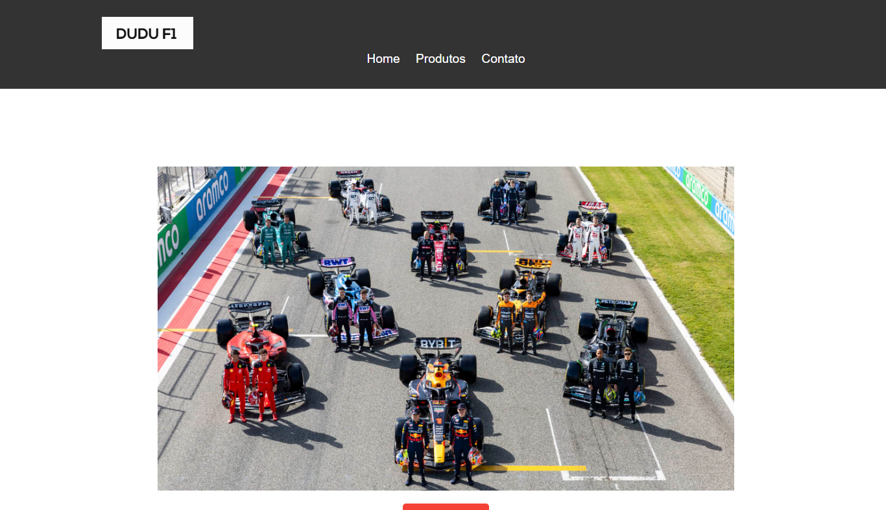

Olá! Eu sou Carlos Eduardo Borba Silva
Bem-vindo ao meu portfólio online!
Sobre Mim
- Desde o início da minha carreira, sempre fui movido pela paixão em contribuir para a eficiência e a melhoria contínua dos processos empresariais. Na Clarios Energy LTDA, onde atuo na área administrativa do Setor de Montagem, tive a oportunidade de desenvolver e aplicar conhecimentos valiosos em métodos Kanban, 5S e Gestão da Qualidade. No entanto, nos últimos anos, meu interesse por tecnologias da informação (TI) cresceu significativamente, levando-me a buscar ativamente conhecimentos e competências nessa área. Tenho dedicado grande parte do meu tempo livre para estudar e me atualizar sobre as últimas tendências e inovações em TI. Participei de cursos online, workshops e webinars, além de me engajar em comunidades e fóruns de TI para trocar experiências e aprender com outros profissionais do setor. Minha determinação em migrar para a área de TI é impulsionada pela convicção de que a tecnologia é uma força transformadora que pode melhorar significativamente os processos empresariais e a produtividade.Estou profundamente comprometido em aplicar minhas habilidades analíticas e de resolução de problemas adquiridas na Clarios Energy LTDA ao campo de TI. Acredito que minha experiência em gestão de projetos, melhoria contínua e qualidade pode trazer uma perspectiva única e valiosa para qualquer equipe de TI.Além disso, minha capacidade de trabalhar em equipe e comunicar-me de forma eficaz serão fundamentais para colaborar com colegas e stakeholders na implementação de soluções tecnológicas inovadoras. Estou ansioso para contribuir com minha paixão e dedicação à área de TI, ajudando empresas a enfrentar os desafios tecnológicos do futuro e a aproveitar as oportunidades que a transformação digital proporciona. Meu objetivo é continuar aprendendo e crescendo como profissional de TI, sempre buscando excelência e inovação em tudo o que faço.
Minha Carreira
- Clarios (2023 - 2024): Jovem Aprendiz "Auxiliar administrativo" Responsabilidades: Na area de Sucata, em Inventarios, e projetos.
- Clarios (2024 - 2024): Estagiario "Auxiliar administrativo." Responsabilidades: Auxiliar na calibração de gabaritos e instrumentos de medição das linhas de montagem; solicitar treinamentos ao RH e informar supervisores; verificar e alinhar necessidades específicas de treinamento com o RH; manter supervisores informados; participar de projetos de redução de custos; comprar materiais de escritório; preparar materiais para reuniões de gestão da planta nas terças e quintas-feiras, focando em segurança, qualidade, produção e custos.
- Bericap (2024 - Presente):Sou responsável pela gestão e previsão de produção, garantindo níveis ótimos de estoque e alocação de recursos. Utilizo o Microsoft Access para manter e analisar bancos de dados de produção, garantindo a precisão e a integridade dos dados. Desenvolvo macros VBA para automatizar tarefas repetitivas e otimizar processos administrativos de produção. Realizo análises de dados de produção e crio relatórios dinâmicos em Power BI, fornecendo insights estratégicos e apoiando a tomada de decisões.
Educação
- Ads- Analise e Desenvolvimento de Sistema (Cursando 2/5) - Athon Ensino Superior (ATHON), Sorocaba
- Power Bi, Dax, PowerQuery - Senai 20H
- Power Bi - Geração Futuro 40H
Competências e Habilidades
Competências Técnicas
- Python
- HTML/CSS
- Power Bi
- MySQL
- Pacote Office
- Melhoria Contínua
- Métodos Ágeis (5's,Kanban)
Habilidades Interpessoais
- Comunicação
- Trabalho em equipe
- Liderança
- Melhoria Contínua
- Métodos Ágeis (5's,Kanban)
Projetos



Projeto 1: Site e-commerce
Descrição: Sistema web para vendas.
Tecnologias Utilizadas: Html,CSS
Ver no GitHubProjeto 2: Desafio-Target
Descrição: Este repositório contém soluções para problemas de
programação que envolvem lógica e manipulação de dados.
Tecnologias Utilizadas: Python, Json
Ver no GitHubCurrículo
Ou entre em contato através das minhas redes sociais: